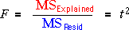

Is the model's slope zero?
We now use the explained and residual sums of squares to test whether there is a relationship between the response, Y, and an explanatory variable, X. Assuming the model

Although it takes a considerable amount of algebra to prove, this t statistic is closely related to the F ratio in the analysis of variance test,

Therefore...
Both tests result in the same p-values and conclusions.